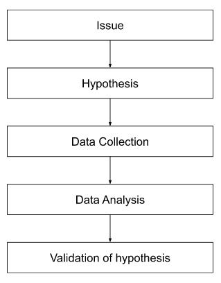

What is Deductive Reasoning?
Deductive Reasoning is a research method that works from a broad topic to a narrower topic. It is informally known as the “top-down” approach. Deductive reasoning is based on theories and logical premises to drive data collection and analysis. These logical premises are used to obtain a specific and objective conclusion. According to Doyle (2020), the if/then statement greatly represents deductive reasoning. It tells that if A = B and B = C, then A = C.
The deductive method starts with a theory that is guided by a testable hypothesis. This theory is then further narrowed down during data collection to accurately address the hypothesis. The collected empirical data would then either confirm or refute the given hypothesis.

This Method is often used in scientific investigations where the researcher reads existing theories of whatever phenomenon he or she is examining and then tests hypotheses that come from those theories.